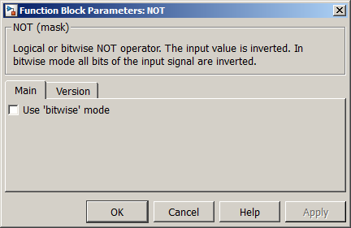
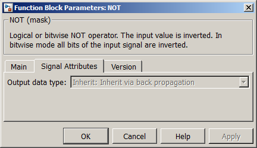

Using the parameter mask the block can be configured according to the users needs. Via register card Main the following options are available (see Figure 1).
- Use 'bitwise' mode. If checked the block provides a bitwise NOT operation onto the input.

Figure 1:
Parameter Mask Dialog - Register card Main
Via the register card Signal Attributes signal related attributes can be configured (see Figure 2).
- Output data type. The data type of the output signal can be configured here, if bitwise mode is selected.

Figure 2:
Parameter Mask Dialog - Register card Signal Attributes